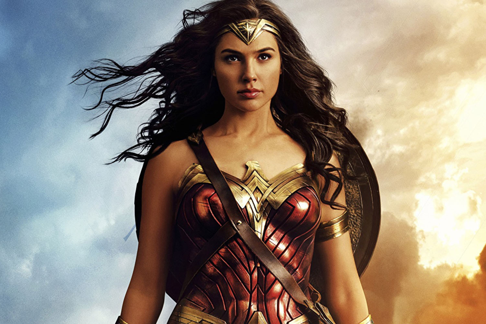

01 de Junho de 2017
Filme Mulher-Maravilha

Treinada desde cedo para ser uma guerreira imbatível, Diana Prince
nunca saiu da paradisíaca ilha em que é reconhecida como princesa das
Amazonas. Quando o piloto Steve Trevor sofre um acidente e cai em uma
praia do local, ela descobre que uma guerra sem precedentes está se
espalhando pelo mundo e decide deixar seu lar certa de que pode parar
o conflito. Lutando para acabar com a guerra, Diana percebe o alcance
de seus poderes e sua verdadeira missão na Terra.